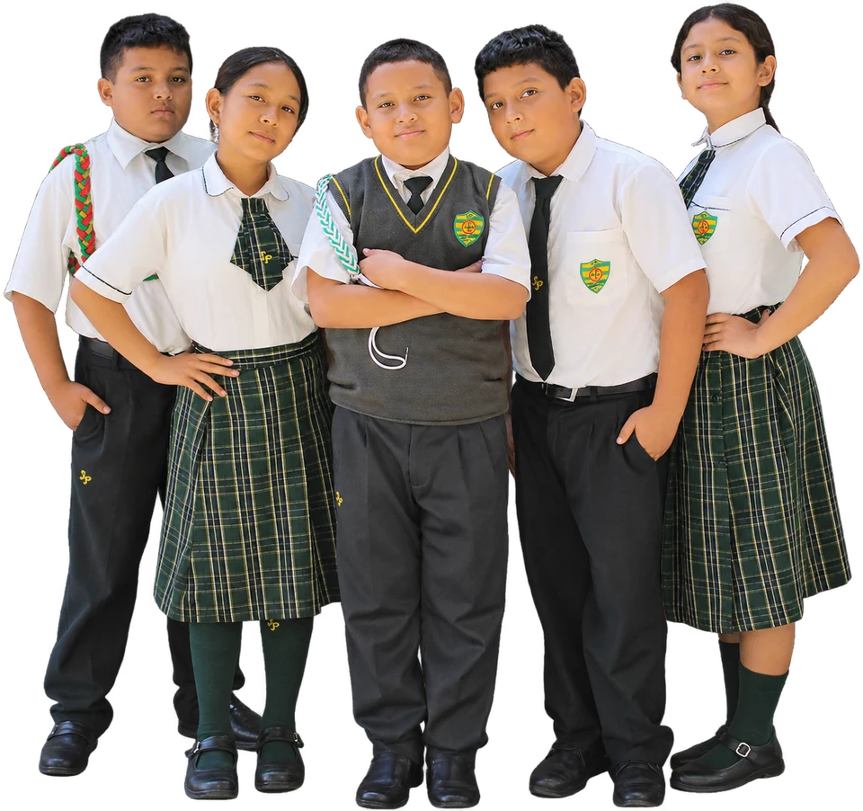

Vida escolar · Tambogrande
El aprendizaje también
se vive en comunidad.
Momentos de concentración, participación y compañerismo que forman parte de la experiencia escolar.

Preguntar, participar
y compartir.
Una actividad en clase es también una oportunidad para escuchar, explicar una idea y aprender junto a los compañeros.
Las experiencias académicas y deportivas acompañan la formación de nuestros estudiantes. La participación, el esfuerzo y la convivencia se construyen día a día.
Ver la galería completa →
Aprender en el aula.
Escenas reales de la comunidad de Tambogrande.